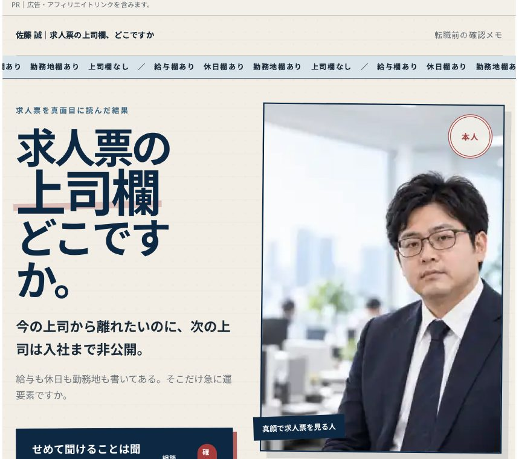
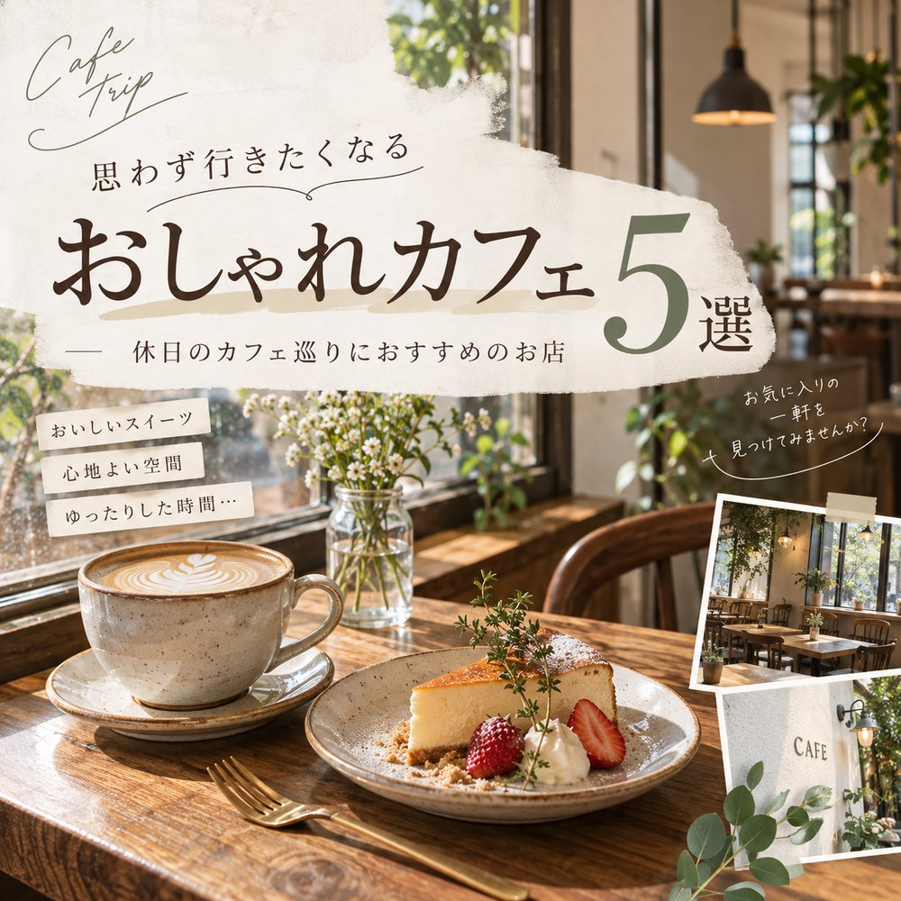
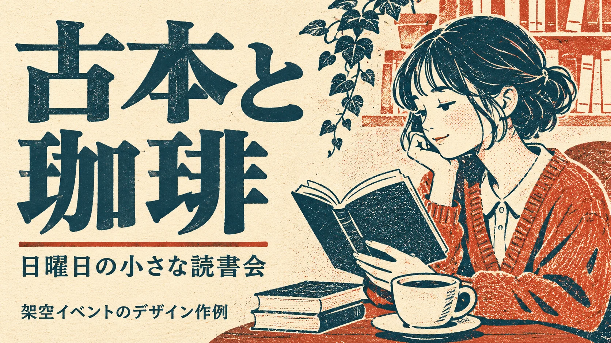

一
YouTube企画・長尺動画
冒頭の引き、物語の転換点、音と画面の演出、最後の案内まで設計します。秒数付きの演出台本から完成動画まで、制作例でご覧いただけます。
長尺動画作例を見る →YouTubeの企画・構成／ショート動画／Web・LP制作
何を、どんな順番で伝えるか。
企画から制作まで対応します。
動画・SNSは継続的な制作を中心に。
サイト・LPは単発のご依頼にも対応しています。
素材と要件が揃う制作例規模の案件では、分野を問わず最短1日で納品前確認まで進めます。
冒頭の引き、物語の転換点、音と画面の演出、最後の案内まで設計します。秒数付きの演出台本から完成動画まで、制作例でご覧いただけます。
長尺動画作例を見る →フック、台本、演出設計、編集まで対応します。CapCutとClaude Codeを活用し、内容の確認と仕上げは自分で行います。継続的な制作のご相談も歓迎します。
作品例を見る →何より重視するのは、見た目よりも「読者が次に何をするか」という導線です。ChatGPTのチャットだけでも企画・文章・デザイン・実装まで構築可能。AIにありがちな画一的な表現を避け、SEOと行動導線を踏まえて仕上げます。
作品例を見る →見る人・媒体・目的を先に決め、文字の優先順位と余白から設計。色・書体を絞り、縮小しても読めるか確認します。レトロ印刷風からシンプルな情報整理型まで対応します。
作品例を見る →
ChatGPTのチャットだけで、企画・ライティング設計・サイト構築・デザイン・画像配置・公開まで一貫して制作した例。飲食現場の実体験を起点に、記事から転職相談への導線も設計。
飲食店で働く人の悩みを、自身の現場経験をもとに記事にした情報サイトです。「辞めたいけれど自分が抜けたら店が回らない」「料理は好きでも、今の働き方は続けられない」などのテーマを扱い、トップページから悩み別の記事へ進める構成にしました。記事内では飲食業界向け転職サービスへの案内を自然に配置し、情報収集から相談までをつなげています。企画・構成・文章・デザイン・実装を担当しました。
サイトを見る ↗
担当：企画・構成・デザイン・実装。記事からチェックへの導線を設計。
相続の聞き書きを仕事にしている人の情報サイトです。家族の話を聞いて整理する活動を、記事コンテンツと無料の5問チェックで伝える構成にしました。企画・構成・デザイン・実装まで一貫して担当し、記事から無料チェック、そして相談先の検討へと進む導線を設計しています。煽らない文章トーンを全体で統一しました。
サイトを見る ↗
ChatGPTのチャットだけで、企画・ライティング設計・LP構築・デザイン・画像配置・公開まで一貫して制作した例。求人票の曖昧な表現を具体的な確認項目へ整理。
転職を考える人向けに、求人票の読み解き方をまとめた、動きのあるLPです。「人柄重視」「風通しの良い職場」など求人票によく見られる表現を取り上げ、面接で確認したい質問に置き換える構成にしました。先に見る3つの確認ポイントから、転職エージェントに相談する流れへ進む導線を設計しています。
サイトを見る ↗制作の進め方｜Web・LP
LPで先に決めるのは見た目ではなく、誰がどこから来て、どんな疑問を解消し、最後にどの行動を選ぶのか。読者が納得できる情報の順番と、無理のないCTAへの流れを設計してから文章とデザインを整えます。検索流入と広告流入では、見せる情報も導線も変えます。
制作実例｜ChatGPTのみでWeb・LPを構築
「飲食の仕事」と「佐藤の転職情報LP」は、ChatGPTのチャットだけで、企画・ライティング設計・サイト構築・デザイン・画像配置・LP公開まで一貫して制作した例です。目的・構成・コピーを会話で詰め、HTML/CSSなどの実装を組み立てながら、レイアウトや文章、導線の気になる点をその都度修正しました。
AIに一度依頼して完成を待つのではなく、何を作るかを分解し、細かな変更を重ねる進め方です。もちろんCodexやClaude Codeを使用した制作・実装にも対応しています。案件に合わせてツールを使い分け、完成形は自分で判断します。
量産的なSaaS風レイアウト、意味のない英字ラベルや飾り数字、抽象的なコピー、過剰なグラデーションや装飾を見直し、案件の世界観に合う余白・書体・写真・レイアウトへ調整します。一方で、どれほどデザインが美しくても、読者が次の行動を選べなければLPの役割を果たせません。「理解→納得→行動」まで迷わず進める導線を優先しています。
冒頭で相手の疑問に答える。「驚きの」「次世代」といった抽象的な宣伝語より、具体的な悩み・場面・特徴から書き始めます。
見出しだけでも話が追える。読者が途中から見ても理解できるよう、一段落に話題を詰め込まず、結論・理由・具体例を整理します。
行動まで自然につなぐ。読者の迷いに先回りして条件や注意点を示し、CTAでは「押すと何が起きるか」を明確にします。
検索意図から情報を選ぶ。想定キーワードだけを繰り返さず、検索する人が知りたい答え・比較点・次の疑問を見出しと本文に反映します。
ページの骨格を整える。内容に合うタイトル・見出し階層・meta description、適切な内部リンク、画像の代替テキストを検討します。
スマホと表示品質を確かめる。画像の重さや読みやすさ、情報の更新性も確認。検索順位を保証するものではなく、読み手と検索エンジンの双方が理解しやすいページを目指します。
制作領域を問わず、要件と素材が揃う案件は着手から最短1日で納品前の最終確認まで進めることを目指しています。制作範囲が大きい案件、外部確認・追加修正が必要な案件は個別に納期を調整します。AIの出力は自分で確認・修正し、SEO施策の効果や検索順位は保証しません。
自主制作／創作ストーリー／企画・台本・映像演出
5分8秒／1920×1080／24fps／横型の長尺ストーリー動画
3ヶ月間、既読のまま返事を待っている人の夜を描く物語です。視聴者の共感から入り、タロットの一枚をきっかけに「相手は戻ってくるのか」から「私はどうしたいのか」へ問いを転換。最後は物語の中で意味を持った灯りを、夜間受付の案内へつなげています。
秒単位の演出台本。ナレーションの実測尺に合わせて、字幕・場面転換・効果音の時刻を調整。音声は1文ずつ管理しています。
動かす場面を選ぶ。スマホが光る、箱を開ける、ランプが灯る、という要所の動画を制作。静止画にもカメラ移動や光の演出を加えて一本にまとめています。
青から琥珀へ。孤独な夜の青い光から、カードを見つけたあとの暖かな光へ。色と音で感情の移り変わりを表現しています。
「既読のまま、三ヶ月。」
「午前2時14分。」
0秒目にサムネイルを置き、約0.9秒から本編へ溶け、約2秒で題字を出します。説明を並べず、暗い部屋とスマートフォンの冷たい光だけで状況を伝えます。
「あの人は、戻ってくるの？」
「吊るされた男」のカードを開いたあと、次の問いに変わります。
「私は、いつまでここで待つつもりなんだろう」
相手の本心や未来を断定せず、主人公が自分の気持ちへ目を向ける転換点として設計しています。
ランプが灯るシーンを挟み、物語の余韻を切らずに「夜間受付」の紹介へ移行。決め台詞では暗転後の文字演出と声を合わせています。
「その恋、一旦お預かりします。」
対象者の情景、冒頭の引き、転換点、結末と案内の意味を先に整理する。
ナレーション・字幕・画面・間・効果音をタイムコードで結び、工程を分解する。
既存の画像を活かし、必要な箇所だけ生成動画やカード反転演出を組み合わせる。
文字の可読性、音と映像の同期、演出のつながりを確認し、版を重ねて仕上げる。
自らの制作工程を説明できる自主制作の創作動画です。YouTubeでの公開実績、視聴維持率、受託案件の納品実績として提示するものではありません。
自主制作サンプル／40代美容ショート・台本から映像まで
「シャンプー3本目」／8パート構成／4シーン／縦型ショート
ショート動画の台本は、冒頭で興味を引き、視聴者が続きも見たくなる流れを考えて作ります。視聴者が何を知りたくなり、どこで離れそうかを想像し、興味・共感・納得・行動を8つの役割に分けて構成します。
冒頭で対象者を伝えます。「40代」「シャンプー3本目」「洗う前の1分」を組み合わせ、誰に向けた動画か、なぜ今見るのかを示します。
日常の動作から共感を作ります。「濡らして、すぐシャンプー」のように、映像にできる身近な場面を台本に入れます。
置いた問いにきちんと答えます。最初の問いには役立つ情報を渡し、その後もう一度、冒頭の具体物に戻って結末を作ります。
商品情報を事実と演出に分けます。商品の使い方や仕様は公式情報と照合し、未確認の使用体験や効果は断定しません。
「興味を引く → 視点を切り替える → 共感 → 問い → 答え → もう一度問い → 結末 → 次の行動」の順に構成します。問いを置いたら、直後に視聴者が求める答えを渡します。
題材・対象者・目的を決めたあと、切り口や冒頭の案を複数のAIで比べます。展開の順番、言葉の強さ、説明の重なり、映像での伝わり方を自分で読み直し、台本を修正します。
台本にはパートごとの役割、秒数、ナレーション、画面の演出を書きます。ナレーションの長さも実際に確かめ、18秒・8パートを4シーンにまとめました。画像と音を組み合わせて映像にしたあと、字幕・音・テンポ・情報の正確さを見直します。
8パートはこの作例の設計です。視聴維持率や広告成果を保証するものではありません。掲載動画は自主制作です。
参考元の冒頭演出を研究した自主制作例／2ch風ショート
Premiere ProやAfter Effectsを使わず、Claude Codeで映像そのものを組み立てています。 参考動画から視聴者を止める演出の構造を読み取り、独自に用意した人物・背景・テロップ・音を組み合わせて再構築。素材を並べるだけでなく、表示位置・動き・タイミングまでコードで調整できる制作技術を示した作例です。
冒頭と画面の流れを分析します。情報を出す順番、人物と背景の配置、場面転換、音の役割を確認します。
映像をコードで制御します。画像・テロップを重ね、画面上の動きや切り替えを組み立てます。制作内容に応じて生成素材と既存素材を使い分けます。
細かな修正にも対応します。文字の位置や大きさ、表示時間、場面転換や音のタイミングをコードで調整します。
参考元の演出を研究して組み直した自主制作です。元動画の素材や制作実績ではありません。



架空の読書会を題材にした自主制作例。古紙の質感、網点、インクのかすれを使い、見出しと人物を左右に分けて情報の優先順位を付けました。実在イベントの広告ではありません。
飲食店のキッチンで働きながら、副業でサイト・動画・画像の制作をしています。
AIらしい見た目を調整する技術以上に、読者の理解から問い合わせ・相談などの行動へつながる導線設計を重視しています。文章と画面は自分で確認し、必要な修正を行います。
動画・SNS制作は継続的なご依頼を中心に、サイト・LP制作は単発のご相談にも対応します。ご連絡は、ご利用中のサービスのメッセージ機能からお願いします。